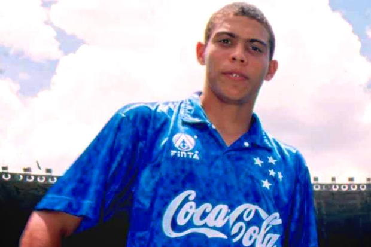

Carreira

Iniciou seu caminho no esporte no futsal do Valqueire Tênis Clube, transferindo-se cedo para o Social Ramos Clube do Rio de Janeiro, para logo em seguida mudar-se para o São Cristóvão, também carioca. Porém, foi no Cruzeiro que se profissionalizou e alcançou a fama como atleta no segundo semestre de 1993, conquistando a Copa do Brasil e o Campeonato Mineiro. Seguiu os passos do compatriota Romário e iniciou sua carreira na Europa no PSV Eindhoven, sendo artilheiro da Eredivisie e campeão da Copa dos Países Baixos. Transferiu-se para o Barcelona em 1996, onde teve a melhor temporada de sua carreira em número de gols, conquistando a Supercopa da Espanha, a Copa do Rei e a Recopa Europeia, sendo escolhido como Melhor Jogador do Mundo pela FIFA e segundo melhor pela France Football no tradicional prêmio Ballon d'Or, sendo até hoje o mais jovem a receber o prêmio da entidade máxima do esporte, com apenas vinte anos de idade.
História

Ronaldo Luís Nazário de Lima (Itaguaí, 22 de setembro de 1976) é um empresário e ex-futebolista brasileiro que atuava como centroavante, amplamente reconhecido como um dos melhores futebolistas de todos os tempos. Atualmente é presidente do Real Valladolid, da Espanha, e sócio-proprietário do Cruzeiro, do Brasil. O diminutivo Ronaldinho surgiu na Copa do Mundo FIFA de 1994, para distingui-lo de Ronaldão, companheiro mais velho. Já o apelido de Fenômeno foi forjado pela imprensa italiana, quando defendeu a camisa da Internazionale. Em seu auge, ficou conhecido pelas suas arrancadas, dribles e sua capacidade de finalização
Polêmicas

Durante toda sua carreira, a grande polêmica protagonizada por Ronaldo aconteceu na madrugada do dia 28 de abril de 2008, quando passava férias no Rio de Janeiro. Depois de uma festa na Barra da Tijuca, na zona oeste da cidade, na qual comemorava uma vitória do Flamengo, Ronaldo passou pela orla da Barra, e chamou a travesti Andréia Albertini, a quem levou para o motel Papillon. Ao casal se juntaram ainda outras duas mulheres transgênero. Ainda no motel, Andréia decidiu chantagear Ronaldo. No fim de 2008, o caso chegou aos tribunais. Andréia chegou a dizer que Ronaldo procurava drogas e posteriormente foi acusada formalmente por extorsão contra o jogador.